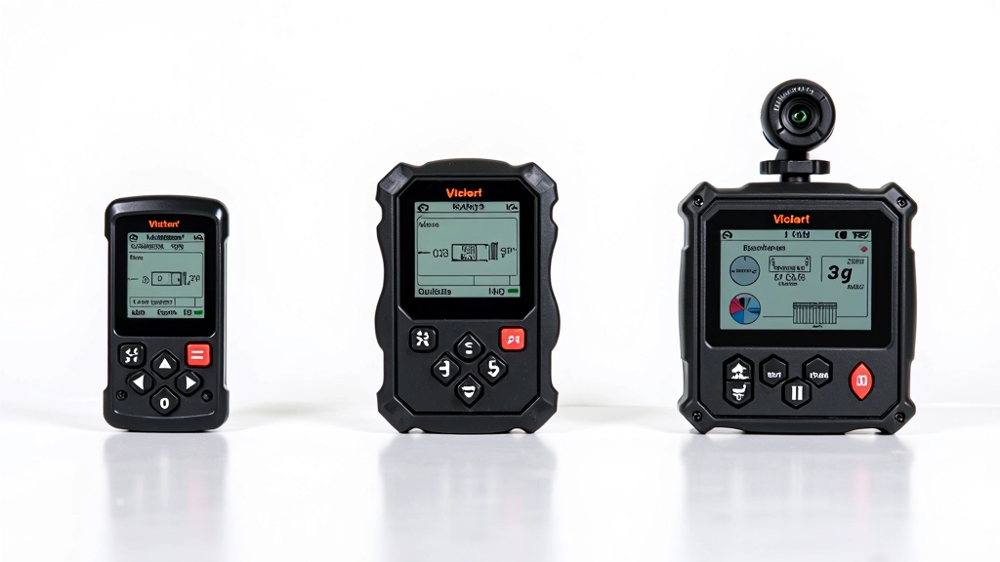

فهم بيانات التلمتري: دليل شامل للمبتدئين
شرح مفصل لكل المعادلات والقراءات الأساسية التي تظهر على شاشات تحليل البيانات.
اقرأ المزيددليل عملي لاختيار أفضل نظام تسجيل البيانات لسيارتك. نتناول المميزات الأساسية والفروقات بين الأنظمة المختلفة لمساعدتك في اتخاذ القرار الصحيح.
اختيار نظام تسجيل البيانات الصحيح هو خطوة أساسية لأي سائق يريد تحسين أدائه. النظام الجيد يعطيك معلومات دقيقة عن سرعة سيارتك، التسارع، وأداء المنعطفات. بدون هذه البيانات، تقود بناءً على الحدس فقط وليس على حقائق ملموسة.
هناك أنظمة مختلفة في السوق — من الأنظمة البسيطة والرخيصة إلى الأنظمة المتقدمة التي تسجل عشرات المعادلات. ليس كل نظام مناسب لكل سائق. نحتاج أن نفهم احتياجاتنا أولاً قبل أن نختار.

النظام الجيد يسجل البيانات بدقة عالية. نحتاج أن نعرف سرعتنا بدقة ±1 كم/س على الأقل. كلما كانت الدقة أعلى، كانت البيانات أكثر قيمة.
تأكد أن النظام يمكنه تسجيل عدة لفات كاملة دون فقدان البيانات. بعض الأنظمة الرخيصة تفقد البيانات بعد دقائق قليلة.
لا تريد نظام معقد جداً. يجب أن تتمكن من تركيبه بنفسك والبدء في التسجيل بدقائق معدودة، وليس ساعات.
البيانات بدون تحليل عديمة الفائدة. يجب أن يأتي النظام مع برنامج يعرض الرسوم البيانية والمقارنات بوضوح.
يوجد ثلاث فئات رئيسية من أنظمة تسجيل البيانات في سوق الكارتينج. كل فئة لها مميزاتها وعيوبها. المهم أن تختار ما يناسب ميزانيتك واحتياجاتك.
تسجل السرعة فقط، أو السرعة والتسارع. السعر منخفض جداً (200-500 دولار). مناسبة للمبتدئين الذين يريدون البدء بسهولة. لكنها لا تعطيك الصورة الكاملة عن أدائك.
تسجل 10-15 معادلة مختلفة. تتضمن السرعة، التسارع، الجيروسكوب (قياس الدوران)، وحرارة الإطارات. السعر 800-1500 دولار. هذا هو الخيار الأفضل لمعظم السائقين الجادين.
تسجل أكثر من 30 معادلة. تتضمن كاميرا، صوت، ضغط الإطارات، درجة الحرارة، والموضع على الحلبة. السعر 2000 دولار فما فوق. موجهة للسائقين المحترفين والفريقات الاحترافية.

لا تشتري أغلى نظام فقط لأنه غالي. احتياجاتك هي التي تحدد السعر. إذا كنت مبتدئاً، ابدأ بنظام متوسط. ستجد أنه يعطيك كل المعلومات التي تحتاجها. بعد سنة أو سنتين، يمكنك الترقية إذا شعرت أنك تحتاج معلومات أكثر.
شرح مفصل لكل المعادلات والقراءات الأساسية التي تظهر على شاشات تحليل البيانات.
اقرأ المزيد
تعرف على كيفية استخدام بيانات السرعة والتسارع لتحسين أداؤك في المنعطفات.
اقرأ المزيد
استخدم بيانات التلمتري لفهم الفجوة بينك وبين المنافسين وركز على نقاط الضعف.
اقرأ المزيدتركيب نظام التسجيل ليس معقداً كما يبدو. معظم الأنظمة تأتي مع تعليمات واضحة. الخطوة الأولى هي تثبيت أجهزة الاستشعار في الأماكن الصحيحة — عادة على الإطارات أو الهيكل. ثم توصل الأسلاك بعناية بحيث لا تتداخل مع أي أجزاء متحركة.
يجب أن تكون أسلاك التوصيل آمنة جداً. لا تريد أن تنقطع أثناء السباق وتفقد كل البيانات. استخدم أربطة بلاستيكية قوية أو شريط لاصق صناعي. بعدها، شغل النظام وقم بتشغيل اختبار سريع للتأكد من أنه يسجل البيانات بشكل صحيح.
اقرأ التعليمات بعناية قبل البدء
ثبت أجهزة الاستشعار بقوة وفي الأماكن الصحيحة
تأكد من أن الأسلاك آمنة ومحمية
قم باختبار سريع قبل السباق الحقيقي

فريق التحرير والمراجعة
كتبه فريق لاب تايمز للتحرير، متخصصون في توفير إرشادات عملية وسهلة الفهم حول تسجيل البيانات وتحليل اللفات.
اختيار نظام تسجيل البيانات المناسب هو استثمار في تحسن أدائك. لا تتسرع في الاختيار. فكر في احتياجاتك، ميزانيتك، والمستوى الذي تريد الوصول إليه. إذا كنت مبتدئاً، اختر نظاماً متوسطاً جيداً — هذا سيعطيك كل ما تحتاجه. مع الوقت والخبرة، ستفهم أفضل ما تريد من البيانات.
تذكر أن النظام الأغلى ليس دائماً الأفضل لك. ما يهم هو أن تجد نظاماً موثوقاً يعطيك بيانات دقيقة وبرنامج تحليل سهل الاستخدام. مع النظام الصحيح والتحليل الجيد، ستبدأ في رؤية تحسن حقيقي في أدائك خلال أسابيع قليلة.
هذا المقال يقدم معلومات تعليمية عن أنظمة تسجيل البيانات في الكارتينج. النصائح والتوصيات مبنية على خبرات عملية عامة. الأسعار والمواصفات المذكورة قد تختلف حسب المنطقة والوقت. نوصيك بالتحقق من مواصفات كل نظام بعناية قبل الشراء والتواصل مع الموردين المحليين للحصول على معلومات محدثة.